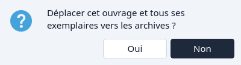
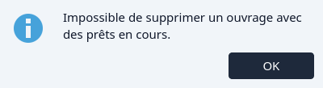
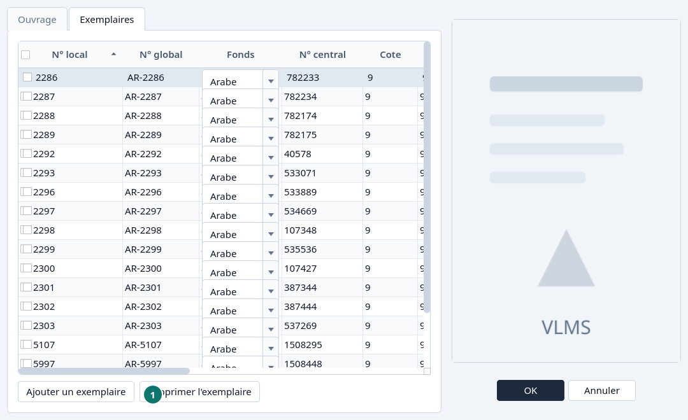
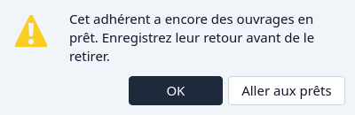
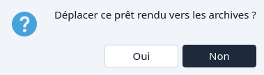
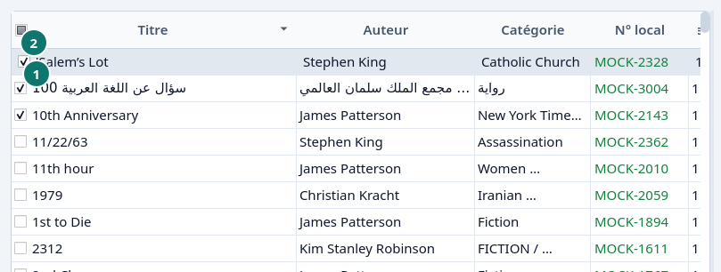
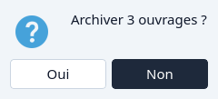
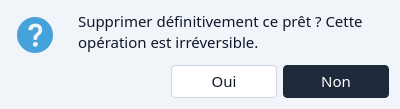

Retirer
Archiver un titre, un exemplaire, un adhérent ou un prêt, puis le retirer pour de bon.
Un ouvrage
Surlignez le titre. Laissez les cases vides si vous visez ce titre seul. Cliquez Supprimer.


Non laisse le titre dans le Catalogue. Oui archive le titre et ses exemplaires. Leurs numéros locaux restent avec eux, donc ils peuvent être réutilisés. Voir Réutiliser un numéro local.
Si un exemplaire est encore sorti, Supprimer est refusé. Retournez ce prêt d'abord.


Un exemplaire
Modifier le titre, ouvrez l'onglet Exemplaires, surlignez la ligne, et cliquez Supprimer l'exemplaire. Un exemplaire encore sorti ne peut pas être retiré. OK enregistre l'ouvrage sans cet exemplaire. L'exemplaire est archivé, pas détruit.


- Supprimer l'exemplaire
Un adhérent
Supprimer dans les Adhérents archive l'adhérent, sauf si un prêt de cette personne est encore sorti. Alors le message propose Aller aux prêts.


Un prêt
Seul un prêt retourné peut être archivé depuis la Circulation. Surlignez-le et cliquez Supprimer.


Un prêt ouvert ou en retard doit d'abord être retourné. Voir Retourner ou prolonger.
Plusieurs à la fois
Cochez les lignes, y compris avec la case de l'en-tête. Supprimer nomme alors combien, et agit sur chaque ligne cochée. Une ligne qui ne peut pas être archivée est passée. Voir Cases.




Pour de bon
Quand la fiche archivée ne doit pas revenir, ouvrez les Archives et suivez l'ordre. Un prêt peut partir à tout moment. Un exemplaire attend qu'aucun prêt ne le nomme. Un livre attend de n'avoir plus d'exemplaires. Un adhérent attend qu'aucun prêt ne le nomme.

